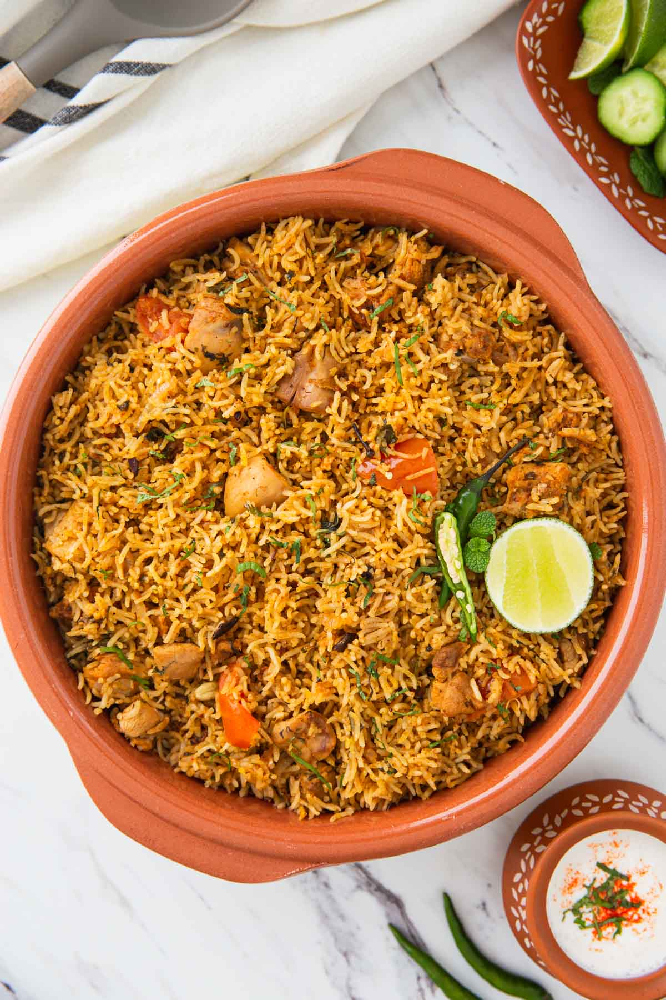

Biriyani Recipe
Home

Description
Biryani is a flavorful and aromatic rice dish made with fragrant basmati rice,
tender meat or vegetables, and a blend of traditional spices. It is one of the
most popular dishes in South Asian cuisine and is enjoyed during festivals,
family gatherings, and special occasions.
Ingredients
- 2 cups basmati rice
- 500 g chicken (or vegetables)
- 2 onions, sliced
- 2 tomatoes, chopped
- 2 tablespoons ginger-garlic paste
- 2 green chilies
- 1 cup yogurt
- 2 tablespoons biryani masala
- 1 teaspoon turmeric powder
- 1 teaspoon red chili powder
- Fresh mint leaves
- Fresh coriander leaves
- 2 tablespoons cooking oil or ghee
- Salt to taste
- Water as needed
Steps
- 2 cups basmati rice
- 500 g chicken (or vegetables)
- 2 onions, sliced
- 2 tomatoes, chopped
- 2 tablespoons ginger-garlic paste
- 2 green chilies
- 1 cup yogurt
- 2 tablespoons biryani masala
- 1 teaspoon turmeric powder
- 1 teaspoon red chili powder
- Fresh mint leaves
- Fresh coriander leaves
- 2 tablespoons cooking oil or ghee
- Salt to taste
- Water as needed